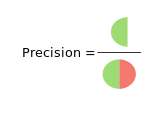
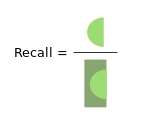

All these terms seem to be confusing and this simple page should help to sort it out
| Confusion matrix | Class 1. Predicted | Class 2. Predicted |
|---|---|---|
| Class 1. Actual | ||
| Class 2. Actual |
| Precision | Recall |
|---|---|
| How many selected items are relevant  |
How many relevant items are selected  |
© 2020 Velikii Dmitrii